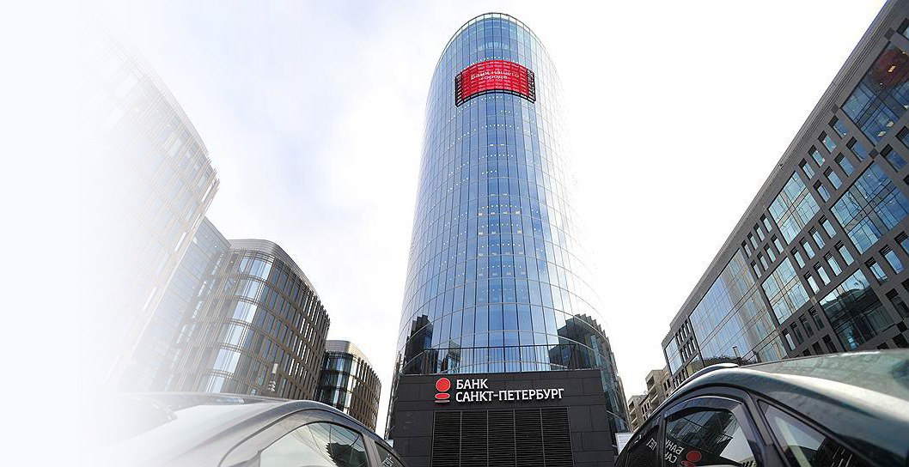

Информация о нас
Банк
«Санкт-Петербург»
Один из крупнейших региональных банков России

«Санкт-Петербург» — советский и российский коммерческий банк, созданный в форме публичного акционерного общества. Головной офис расположен в Санкт-Петербурге.
По последним имеющимся данным Центра экономического анализа «Интерфакс» Банк «Санкт-Петербург» среди банков России по итогам 2021 года находится:
на 17 месте по величине активов;
на 18 месте по размеру собственного капитала.
Савельев Александр Васильевич (председатель правления): 22,83 %
Сердюков Сергей Анатольевич: 5,45 %
оффшоры: 32,92 %
Европейский банк реконструкции и развития: 5,25 %
Российская Федерация: 0,06 %
прочие: 33,5 %
обыкновенных: 439 554 000 шт.
привилегированных: 20 100 000 шт.
История
Основан 3 октября 1990 года как акционерное общество «Ленбанк», годом позже получил современное название. В июне 1998 года «Санкт-Петербург» первым среди городских банков получил разрешение Центробанка России на выдачу наличных денег с «карточных» счетов. Банк активизировал кредитование расчетного и валютного счетов импортера, кредиты с использованием пластиковых карт и другие кредитные услуги. Осенью 2007 года «Санкт-Петербург» первым из частных банков России провёл IPO, получил разрешение Федеральной службы по финансовым рынкам на выпуск расписок, но от листинга на зарубежной бирже впоследствии отказался (расписки были конвертированы в обычные акции, которые сейчас находятся в обращении на ряде российских бирж) Банк осуществляет свою деятельность на территории Санкт-Петербурга, Ленинградской области, Москвы, Калининграда, Ростова-на-Дону, Новосибирска и Краснодара. По результатам ежегодной финансовой отчетности Банк в течение последнего десятилетия демонстрирует устойчивость и стабильность на всех основных рынках финансовых услуг.Деятельность
Приоритетные направления деятельности Банка — кредитование, расчетно-кассовое обслуживание, обслуживание юридических и физических лиц, операции на валютном рынке, рынке межбанковских кредитов, операции с ценными бумагами. По результатам 2008 года активы банка составили 215,7 млрд рублей (7,3 млрд долларов США). Объём собственных средств увеличился на 25 % и составил 18,8 млрд рублей (639,8 млн долларов США). Наличие собственного процессингового центра позволяет Банку на высочайшем уровне поддерживать и обслуживать пластиковые карты. Благодаря правильно избранной стратегии, последовательной финансовой политике, приверженности ценностям цивилизованного ведения бизнеса Банк на протяжении многих лет сохраняет репутацию сильного и надежного партнера.Собственники
На 1 октября 2016 года состав собственников банка включал:
Всего акций:
Обыкновенные акции торгуются на Московской бирже: MCX: BSPB. Основными акционерами на 20 апреля 2009 года являлись менеджеры банка (59,39 %), ЗАО «Совместный капитал» (11,35 %), ЗАО «Нева-Русь» (4,63 %). Кроме них владельцами акций банка был сын бывшего губернатора города Сергей Матвиенко (4,12 %) и Владимир Путин (0,0000596 %, на 2011 год).
График приема документов
| Категория документов | Время приема документов в рабочие дни с понедельника по четверг | Время приема документов в рабочие дни в пятницу | Дата приема документов |
| Документы к счетам юридических и физических лиц | 09.30 – 17.00 перерыв: 13.00 – 13.45 | 09.30 – 16.00 перерыв: 13.00 – 13.45 | Дата текущего рабочего дня |
| 17.00 – 18.00 | 16.00 – 16.45 | Дата следующего рабочего дня | |
| Документы, относящиеся к деятельности Банка | 09.30 – 18.00 перерыв: 13.00 – 13.45 | 09.30 – 16.45 перерыв: 13.00 – 13.45 | Дата текущего рабочего дня |
Прием документов в субботу, воскресенье и нерабочие праздничные дни не осуществляется.